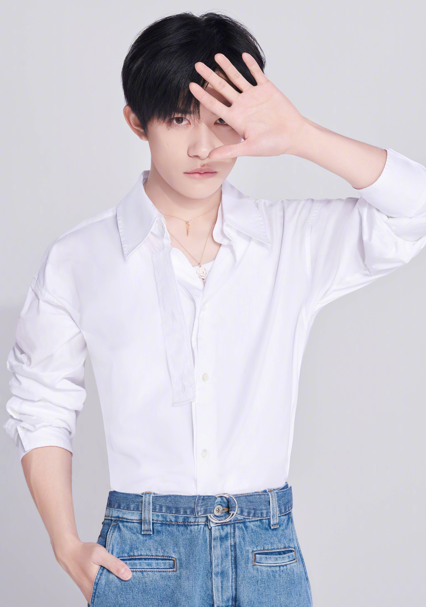

我最近迷上了底片攝影，也因此花了挺長時間在尋覓一台適合自己的底片相機，為此我寒假閒閒沒事的時候，都常常跑到旋轉拍賣上面看有沒有我中意的。剛開始是想說先從傻瓜底片相機入手，所以在網路上也查了不少資料，看來看去發現我自己比起沉穩的黑機，更喜歡輕盈感的銀機，鎖定了顏色目標後，就開始瘋狂的比較各品牌的差異、各型號的性能……等。終於在年假前找到了一台Canon Autoboy 155！輕盈亮麗的外型馬上就吸引我的注意，重點是價格也符合我的預算，心動之餘便馬上下單了。等了幾天，底片相機到達我手上的那種幸福感真的很難用文字形容…..就是那種：連在做其他事時，突然想到自己有底片相機就會噗哧一笑的那種快樂（突然想到這跟我每打完一個耳洞的心情很像），後來我就拍了快兩個多月才要把一捲底片拍完，雖然很想趕快看到照片洗出來的成品，但實在是因為現在底片都好貴……所以都很省著拍。之前忘了在哪裡看到一個影片，貌似是不要想說會浪費底片，想要拍出自己滿意的照片可以在同一個場景把一捲底片拍完，實在是很想要體驗這種不用怕浪費底片的感覺，可能會有人說：底片已經是退流行的東西了，想要拍出復古感的照片用手機拍一拍+條個富古一點的色調；或是直接裝底片相機的app拍就好，但我認為這兩者是無法拿來比較的，除了年代，還有那種珍惜、害怕會拍失敗的感覺是現在手機app無法模擬出來的。

來說說我的另一個興趣：追星！很多人會認為追星很不務正業，但事實上不盡如此。我從國小六年級就因為一首青春修煉手冊而喜歡上TFBOYS裡面的易烊千璽，從國小、國中到高中我都一直很喜歡他，也在追星過程中向他看齊，例如：他沉穩內斂的個性，讓我學會在做很多決定之前都該多想想，不像在還沒認識他以前，做事都毛毛躁躁的；但也有因為他而變得盲目的時候。他是個超級貓控，養了很多貓，暹羅貓、橘貓、美短…….總共十隻!本來我是對貓沒有什麼興趣（如果真的要比的話我還是更喜歡狗）但人總說有時候會有盲目的愛吧！那時候我也跟著超喜歡貓，甚至到了日本的小豆島看到了一隻黑白相間的貓咪都要去摸一下，想起來還是有些荒謬，直到我在高二時因為易烊千璽常常拍電影，一年大半時間都沒露過幾次臉，我才越來越少關注他。有時候我也會想可能在大眾面前的他，只是我們看到的樣子，我可能喜歡的就是這樣的他，但是他越長大、越來越開始做自己，我才想到很有可能我只是喜歡那個在外光鮮亮麗的他，而不是擁有自己世界的他。
